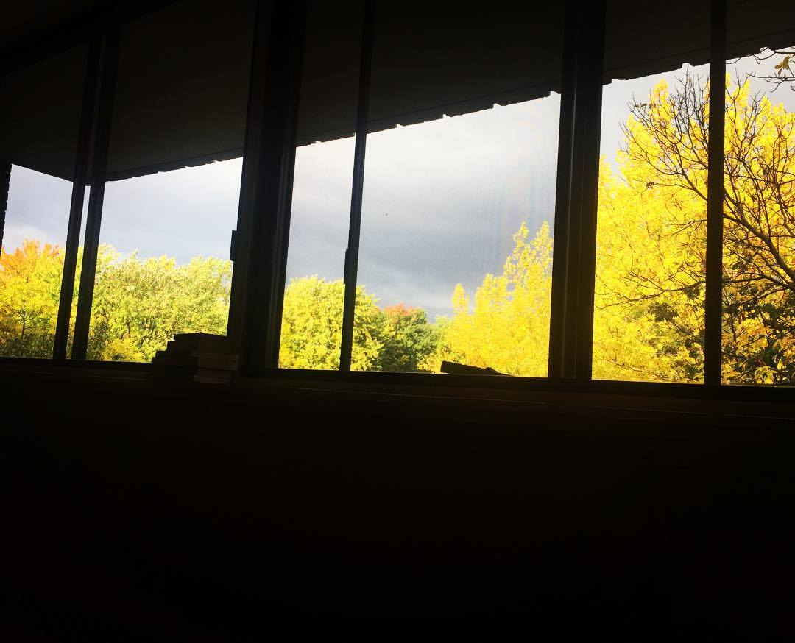
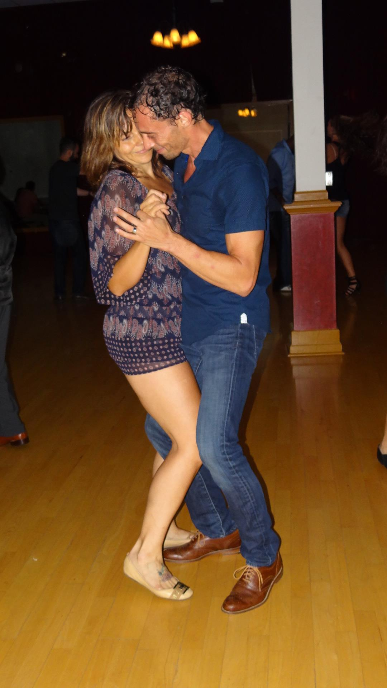
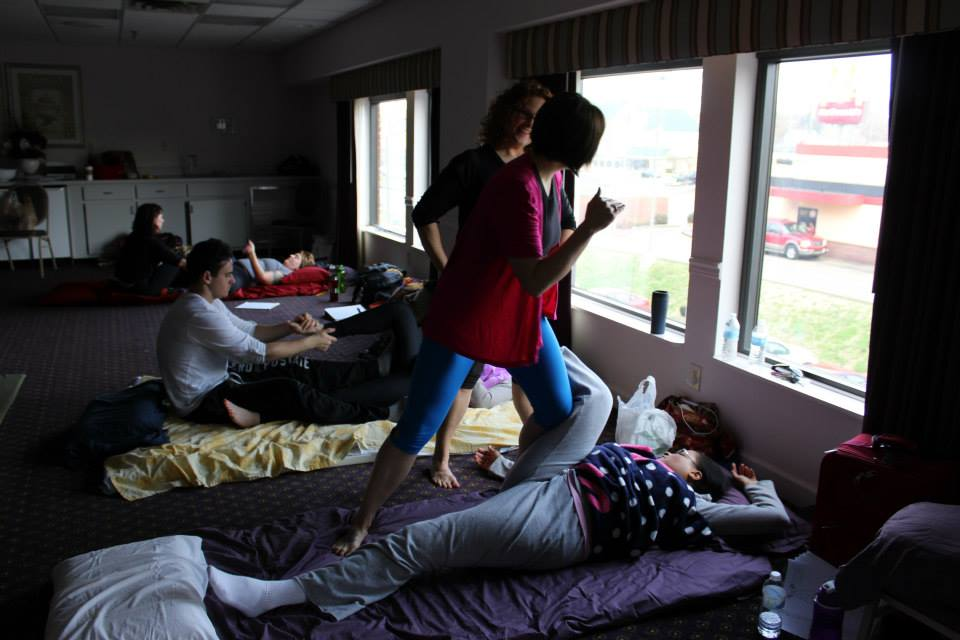

I like to learn, explore and grow in many facets of life. I believe in challenging yourself to lean into activities and behaviors that are not your strong suit in order to grow and exercise the most amazing version of yourself. Growth isn't easy but nothing worth achieving ever is. Difficulty is not a valid excuse to not do something and is usually a great reason to do something.
|  |
PhotographyPhotography helps to keep me in the moment. When I am snapping photos I am aware of, inspired by and grateful for the moment I've discovered. |
|  |
DanceDance teaches us to notice how we are showing up. We get instant feedback from our partners. Dance has taguht me how to let go of control and to always be a beginner. |
|  |
Thai Yoga MassageThai Yoga Massage is referred to as "lazy man's yoga." But I see Thai Massage as the fountain of youth. From the first time I received it, I knew I had to share it with the world. |